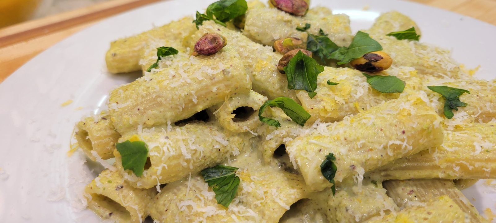

Traditional Pistachio Pesto Pasta

While researching traditional Sicilian recipes, I kept coming across pistachio pesto. I'd never had it before, but I wanted to experience it the way it's traditionally made before making any changes of my own. The pistachios bring a richness that is completely different from the basil pesto I was used to, and finishing the pasta with starchy water turns it into a smooth, glossy sauce.
Prep Time
15 minutes
Cook Time
15 minutes
Total Time
30 minutes
Servings
2
Watch the Video
Ingredients
- 4 oz (115 g) shelled unsalted pistachios
- 1 oz (28 g) Parmigiano Reggiano, finely grated, plus more for serving
- 1 small garlic clove
- 10–12 fresh basil leaves, plus more for serving
- Zest of ¼ lemon (optional)
- ¼ tsp kosher salt, plus more to taste
- Freshly ground black pepper
- ¼ cup (60 ml) extra virgin olive oil, plus more for finishing
- 1–2 tbsp hot pasta water (to adjust consistency)
- 8 oz (225 g) pasta (casarecce, busiate, trofie, fusilli, or rigatoni)
- Salted pasta water
Instructions
- Toast the pistachios in a dry skillet over medium heat for 3–5 minutes, until lightly golden and fragrant. Let them cool completely.
- Add the pistachios, garlic, Parmigiano Reggiano, basil, lemon zest (if using), salt, and pepper to a food processor.
- Pulse until finely chopped.
- With the processor running, slowly drizzle in the olive oil until a thick, creamy pesto forms. If needed, add 1–2 tablespoons of hot water to loosen it slightly.
- Taste and adjust the seasoning.
- Bring a large pot of well-salted water to a boil and cook the pasta until just shy of al dente.
- Reserve about 1 cup of pasta water before draining.
- Add the pesto to a large sauté pan over low heat—do not fry the pesto.
- Stir in about ¼ cup of hot pasta water until the pesto becomes smooth and emulsified.
- Add the cooked pasta to the pan.
- Toss continuously, adding more pasta water a splash at a time until the sauce is glossy and evenly coats the pasta.
- Finish with freshly grated Parmigiano Reggiano, a drizzle of extra virgin olive oil, chopped pistachios, fresh basil, and freshly cracked black pepper. Serve immediately.
Chef’s Notes
I wanted to make this the traditional way before changing anything. The pistachios were richer than I expected, and the pasta water is what turns a thick pesto into a sauce that actually coats the pasta. Keep the heat low once the pesto is in the pan so it stays creamy instead of frying.
Equipment Used
- Food processor
- Large pot
- Large sauté pan
- Dry skillet
- Tongs